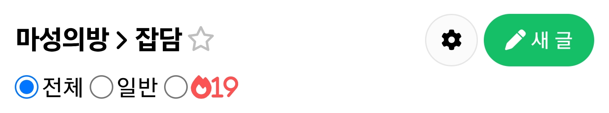
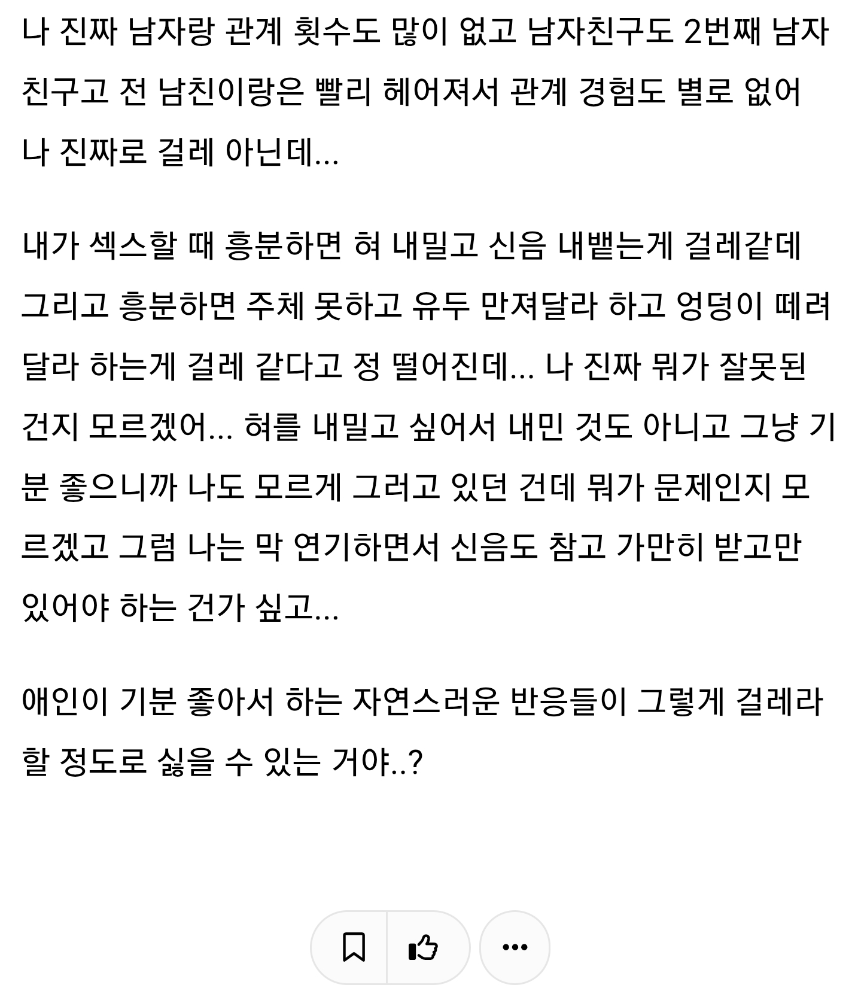
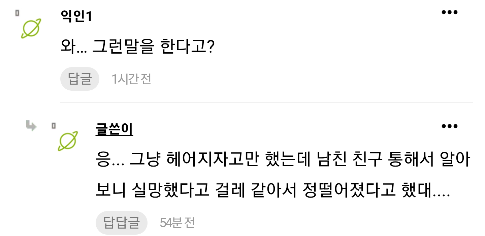
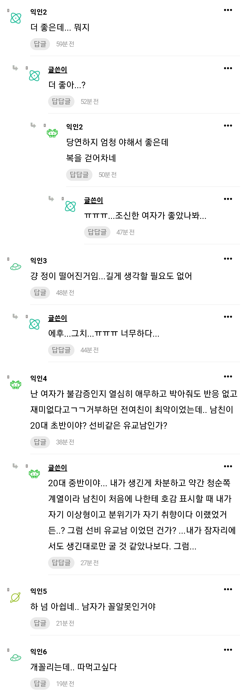

반대로 생각하면 저걸 감당 못할정도로 빻았다는 소리...
빻았으면 애초에 건들질 말든가 건드려놓고 빻았다는 무슨 초식이여
ㄹㅇ
??? : 끄억 끄어억 구에엑
못생겨서 느끼니까 개꼴보기 싫었나?
본인 스스로 청순쪽 계열 ㅋㅋㅋㅋㅋㅋㅋ
개꼴따좌 ㄷㄷ
개인 취향이긴한데 참ㅋㅋ 모르겠다ㅋㅋㅋㅋㅋㅋ 내 입장에선 병신이라고 밖에 생각이 안드네
개주작 ㅋㅋㅋ
무슨 친구통해서 이유를 들어 개같은 상황 만들고있네
설령 전남친이 친구한테 말할수는 있는데
그걸 다시 저 글쓴이한테 적나라하게 말한다고?
그게 상상이되냐
아님 그 친구랑 글쓴이랑 짹스 한판 뜬거다
모쟈이크해서라도 본인 실루엣 올리고 글쓰면 인정함
못생겨서그럼
상대방 말도 들어봐야
오해만 깊어져 가고
아헤가오 M녀를 찬다는게 말이 안됨